基础功能
02智能论文助手
输入问题后发送，保留最近六轮。提到评估、大纲、润色、摘要、投稿、答辩时，先回答，再切到对应面板，按该模块角色再调用一次。快捷问题包括大纲怎么写、摘要优化、文献怎么总结、答辩最爱问什么。
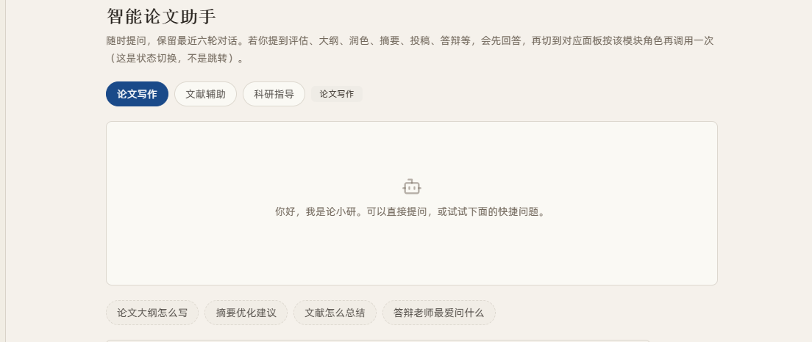
应用方案
2026 iCAN 大学生创新创业大赛
AI无代码智能体挑战赛 · 秒哒无代码应用创新赛题
面向缺少专人指导的本科生与研究生。
评估、大纲、润色、摘要、投稿对照和答辩演练，收进同一个对话，始终对着这一篇稿子。
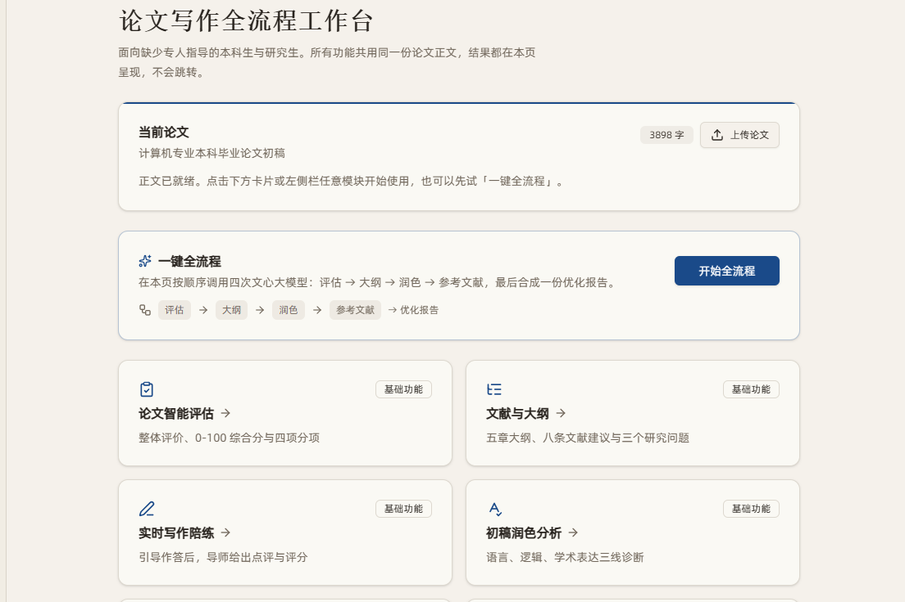
本科生和研究生写论文，难的常常不是完全不会写，而是没有人顺着这一篇稿子往下看。导师时间有限，通用对话又容易脱离原稿：学生换一个窗口，就要把题目、方法和实验再介绍一遍。改了几版之后，自己也难判断创新点有没有写清、实验缺了哪一组对照、参考文献是不是还停在旧标准。
论小研补的是这一段。把同一篇正文放在页面里，评估、大纲、润色、摘要、投稿和答辩都读这一份文字。建议对着稿子写，缺的数字标成待补，不把举例说成已经做过的实验。
| 情形 | 学生实际遇到的事 | 论小研怎么接 |
|---|---|---|
| 没有人看稿 | 改了几版，说不清哪一版真正变好了 | 评估写出整体评价、优点、缺点和可执行建议；复盘对照前后记录 |
| 提纲不贴题 | 网上的通用提纲和自己的实验对不上 | 文献与大纲按当前正文生成五章结构、文献建议和研究问题 |
| 实验写不深 | 只报一个指标，没有消融，也没有失败情况 | 实验设计助手列出对照、消融和失败案例；没有的数标待补 |
| 格式来回改 | 预印本、标准、西文姓名写法不统一 | 参考文献按 GB/T 7714—2025 顺序编码制整理 |
| 答辩来不及 | 不知道会被追问创新点、对照和失败案例 | 答辩模拟按当前论文出题，并给出追问和参考回答 |
正在写课程论文、毕业论文或阶段研究报告的本科生与研究生。默认他们已经有一份初稿或提纲，缺的是对着这篇稿子的修改意见。
输出是修改建议和学生自己的底稿。它不代替学生提交的终稿，也不把模型生成的段落直接当成可以交上去的章节。
作品在百度秒哒上用自然语言搭成。理念只有一句：所有功能围着同一篇正文转，文心每次只做这一步该做的事。
顶栏显示文件名和字数。上传或载入示例之后，左侧每一个功能读的都是这份正文。换功能不用重新粘贴，也不用重新介绍题目。
智能论文助手保留最近六轮。说到评估、大纲、润色、摘要、投稿、答辩，先回答，再切到对应面板，按该面板的角色再调用一次文心。
功能切换发生在页面状态里。地址不变，结果写在当前工作区。首页也写明：结果都在本页呈现，不会跳转。
评估给出整体评价、综合评分、优点、缺点和具体建议。陪练先出引导题，学生作答后再点评。不停留在空泛鼓励。
正文没有写的速度、资源占用、消融结果，保持待补。模型可以指出缺什么，不能把举例写成这篇论文的实验结果。
评估里的学术规范重合度，只提示表述和著录是否规范，帮助看原创性风险。它不是查重鉴定，也不能写成重复率结论。
载入示例使用的是一份计算机专业本科毕业论文初稿，题目是《基于深度学习的校园行人检测与轨迹分析系统》。方法是 YOLOv8 与 ByteTrack。数据写明 8 个校园场景、12400 张图像。结果只报告了 mAP@0.5 = 86.4%，比基线高 4.7 个百分点。载入后顶栏显示 3898 字。
这份初稿被故意留下几处真实缺陷：创新点写成「具有较好的检测效果」，没有消融，没有失败案例，引用格式混用，预印本容易被标成网络文献，标准还停在旧的著录方式，相关工作按年份排列。后面的功能都对着这些缺陷说话，不另编一组实验数字。
放入正文。首页上传 docx、pdf、txt 或 md，也可以点顶栏「载入示例」。读完后顶栏出现文件名和字数，当前论文卡片写「正文已就绪」。
先看全流程，或直接提问。「开始全流程」在本页按顺序调用四次文心：评估、大纲、润色、参考文献，再合成一份优化报告。也可以先打开智能论文助手。
评估对着稿子打分。论文智能评估阅读这 3898 字，写出整体评价、综合评分、优点和缺点。这一次实测的综合评分是 65 分，依据写在结果里，不另改分数。
大纲按这篇实验来。文献与大纲给出五章结构、八条文献建议和三个研究问题，技术线跟着行人检测与轨迹分析走，而不是一套放之各专业皆准的提纲。
陪练先问再评。实时写作陪练先出引导题。学生在文本框写完，再提交，导师角色给出点评和分数。没有作答就不会直接给一个空的高分。
润色、摘要、文献各做一次。润色看语言、逻辑和学术表达。摘要同时出中英文和关键词，并保住 mAP 这类符号。参考文献按 GB/T 7714—2025 改条目。
实验和答辩补缺口。实验设计指出只报了 mAP、缺少消融和失败案例。答辩模拟围绕这篇论文出题。速度、显存、帧率若稿子里没有，就标待补。
复盘看哪条还没改。论文写作复盘把评估记录和润色记录放进同一次调用，列出进步、遗留问题和下一轮优先级。还没有这两份记录时，界面会提示先各做一次。
论小研是百度秒哒上的一个网页应用，不是把模型权重部署在作品自己的服务器里。学生打开页面就能用。阅读和生成由秒哒内置的文心大模型完成，作品侧负责把「当前论文正文」和该功能的补充输入组织成一次问答。
左侧是功能栏，右侧是当前工作区。五组为：基础功能、开题选题、写作表达、规范与实验、答辩与投稿。点任何一项，只更换右侧内容，不新开网址，不刷新整页。
顶栏左侧是「论小研」，中间是文件名和字数。右侧可以载入示例，也可以切换深色，方便长时间看稿。换功能时，这份正文还在。
docx、pdf、txt、md 可以点选，也可以拖进去。txt 和 md 按文本读取。docx 读取压缩包中 word/document.xml 的文字。pdf 逐页取文字。旧版 doc 提示另存为 docx。读失败只在当前窗口说明原因。
各功能的操作按钮都留在当前面板。生成过程中，结果区会显示「文心大模型生成中」。生成结束后，文字写在同一块区域，可以接着改、接着问。
| 文件 | 浏览器里怎么读 | 读完之后 |
|---|---|---|
| txt、md | 按文本读入 | 写入共用正文，顶栏显示文件名和字数 |
| docx | 解开压缩包，取 word/document.xml 中的文字 | 同上，不另存一份到新页面 |
| 逐页取出文字 | 扫描件若抽不出文字，在当前窗口说明 | |
| doc | 不直接解析 | 提示另存为 docx 再上传 |
共用正文是全站唯一的稿子。首页卡片、对话和三十个功能面板读的是同一段文字。某个功能若还有额外栏，例如期刊格式、审稿意见、待改写段落，那段内容只加进这一次调用，不覆盖正文。
每一次点击或发送，对应一次文心问答。系统侧是该功能的角色，用户侧是共用正文，再加上这个面板上的补充栏。不把三十个功能合成一次超长提问，也不在学生没有操作时自动连呼。
| 部分 | 放什么 | 为什么这样分 |
|---|---|---|
| 系统角色 | 这个功能的职责。评估是评审，润色是学术中文编辑，参考文献是著录编辑，答辩是出题与参考回答 | 角色一换，输出结构就跟着换，避免所有按钮都返回同一段聊天 |
| 用户内容 | 当前论文正文。有额外栏时，把研究主题、拟题、章节、期刊要求、审稿意见等接在后面 | 模型必须看见这篇稿，建议才能落到具体句子和具体实验 |
| 对话记忆 | 智能论文助手保留最近六轮 | 追问不用从头介绍题目，也不把更早的闲聊无限累加 |
| 等待与呈现 | 结果区显示文心正在生成，完成后写在本面板 | 学生知道这一步在读稿，而不是页面失去响应 |
首页「一键全流程」是唯一按顺序连做的入口，而且仍然在同一页：第一次评估，第二次大纲，第三次润色，第四次参考文献，最后合成一份优化报告。四次的角色不同，读的正文相同。报告写在首页下方，不跳到新地址。
学生输入「帮我评估这篇论文」。助手先按对话角色回答，再把面板切到论文智能评估，并按评审角色再调用一次。大纲、润色、摘要、投稿、答辩同样处理。
学生也可以不说话，直接点「开始评估」「生成大纲」「出题演练」。这次调用不再经过对话，系统角色就是该面板自己的角色。
| 学生说到 | 先做什么 | 然后切到 | 第二次角色 |
|---|---|---|---|
| 评估这篇论文 | 对话里先给出方向 | 论文智能评估 | 评审：整体评价、评分、优缺点 |
| 文献与大纲 | 先说明提纲会按本稿来 | 文献与大纲 | 规划：五章、文献建议、研究问题 |
| 润色 | 先指出大概要改的层面 | 初稿润色分析 | 编辑：语言、逻辑、学术表达 |
| 摘要 | 先确认摘要要覆盖的结果 | 摘要与关键词 | 编辑：中英文摘要和关键词 |
| 投稿 | 先问清有没有格式要求 | 投稿适配优化 | 投稿顾问：三项清单 |
| 答辩 | 先点出可能被追问的点 | 答辩模拟 | 出题：题目、追问、参考回答 |
快捷问题已经放在对话里：论文大纲怎么写、摘要优化建议、文献怎么总结、答辩老师最爱问什么。场景分为论文写作、文献辅助、科研指导和论文写作四组入口，问法不同，背后仍是这一篇正文。
首页标题是「论文写作全流程工作台」。说明文字写明面向缺少专人指导的本科生与研究生，所有功能共用同一份论文正文。当前论文卡片给出文件名、字数和「上传论文」。示例载入后是《计算机专业本科毕业论文初稿》，3898 字。
图 1 首页。上传或载入示例之后，一键全流程在本页依次调用文心四次：评估、大纲、润色、参考文献，再写成优化报告。下方卡片进入各功能，仍不离开这一份正文。
「开始全流程」适合想先看完整诊断的人。四步都结束后，首页的全流程优化报告区留下每一步的结果。若只想改一件事，点卡片或左侧栏即可：论文智能评估、文献与大纲、实时写作陪练、初稿润色分析、参考文献整理，以及其余分组里的功能，入口都从这里能到。
下面是文心阅读这份示例初稿后的论文智能评估，生成过程中按钮变为「生成中」，结果区标明文心大模型正在输出。综合评分 65 分。依据是：选题有实际意义，结构完整，技术路线合理，但实验部分不够深入，缺少对系统性能的全面分析，文献引用格式也不够规范。
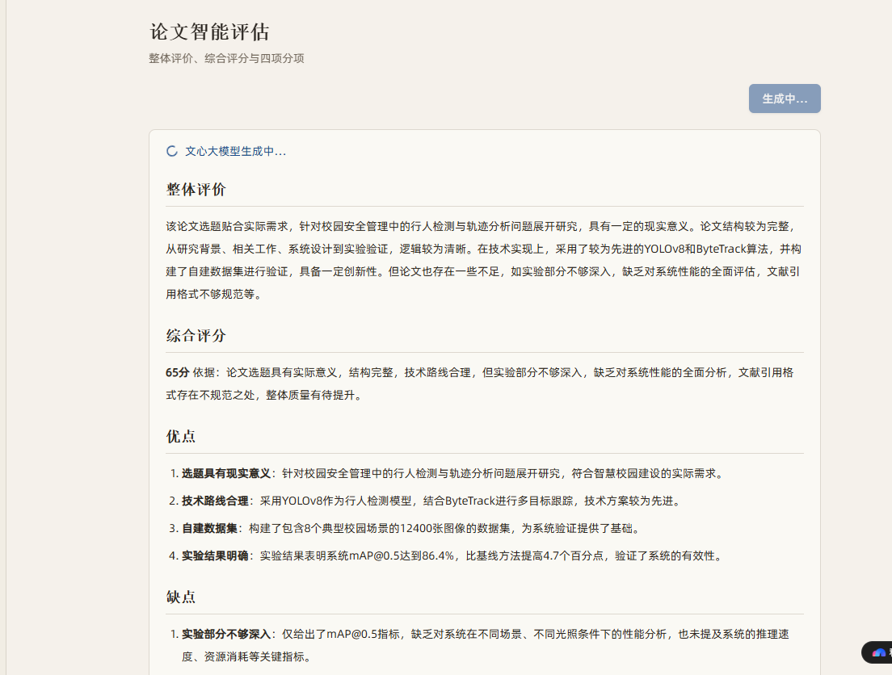
图 2 论文智能评估的一次输出。优点里的 8 个场景、12400 张图像、mAP@0.5 = 86.4% 和高出基线 4.7 个百分点，都来自示例稿原文。缺点指出只报了 mAP，这些缺口应标为待补。
| 结果里的话 | 和示例稿的关系 |
|---|---|
| 优点 | 对准校园行人检测这一选题，以及 YOLOv8、ByteTrack、自建数据和 86.4% 这一唯一报告的指标 |
| 缺点 | 实验只给了 mAP@0.5，没有不同场景、不同光照，也没有推理速度和资源占用。这些是稿子里确实没写的 |
| 随后怎么用 | 实验设计助手把缺的对照和消融列成清单；参考文献整理去改著录；复盘时看 65 分里的哪一条已经改掉 |
这一页只采用这次输出里能够回到示例稿的内容。模型若在修改建议里举出稿子没有的帧率、显存或别的精度，那些数字不进入本方案，也不应当被学生写进论文。
下表按界面上的分组列出全部功能。除首页全流程会连做四次以外，其余每一行都是一次文心调用：角色不同，正文相同。
| 序 | 功能 | 分组 | 学生提供 | 文心这一次写出 |
|---|---|---|---|---|
| 1 | 首页 · 全流程 | 基础功能 | 当前正文 | 评估、大纲、润色、参考文献，再合成优化报告 |
| 2 | 智能论文助手 | 基础功能 | 问题，最近六轮 | 先回答；认到功能则再按该功能调用一次 |
| 3 | 论文智能评估 | 基础功能 | 当前正文 | 整体评价、0–100 分、四项分项、优缺点 |
| 4 | 文献与大纲 | 基础功能 | 研究主题，可空 | 五章大纲、八条文献建议、三个研究问题 |
| 5 | 实时写作陪练 | 基础功能 | 先要题，再作答 | 引导题；作答后的点评与分数 |
| 6 | 初稿润色分析 | 基础功能 | 当前正文 | 语言、逻辑、学术表达与改写示例 |
| 7 | 摘要与关键词 | 基础功能 | 目标要求，可空 | 中英文摘要与关键词，保留指标符号 |
| 8 | 参考文献整理 | 基础功能 | 著录制式：顺序编码制 | 按 GB/T 7714—2025 修正后的条目 |
| 9 | 选题可行性 | 开题选题 | 拟题 | 可行性、空白、风险和更窄的写法 |
| 10 | 开题报告 | 开题选题 | 当前正文 | 依据、内容、方案和约十二周进度 |
| 11 | 文献综述撰写 | 开题选题 | 当前正文 | 按技术线的框架和过渡段 |
| 12 | 进度与任务书 | 开题选题 | 当前正文 | 任务目标、里程碑和交付物 |
| 13 | 科研路径规划 | 开题选题 | 专业、技能、兴趣 | 三个月短期路径和中长期路径 |
| 14 | 学术降重改写 | 写作表达 | 待改写段落 | 改写对照，删空话，判断前置 |
| 15 | 章节扩写 | 写作表达 | 章节，默认绪论 | 可粘贴段落，并指出还缺什么 |
| 16 | 中英学术翻译 | 写作表达 | 待翻译段落 | 译文，保留指标符号，附用词提醒 |
| 17 | 两稿对照 | 写作表达 | 修改说明或第二版 | 进步点，以及未改的高优先级项 |
| 18 | 论文写作复盘 | 写作表达 | 评估记录、润色记录 | 进步、遗留问题和后续优先级 |
| 19 | 术语与缩写表 | 规范与实验 | 当前正文 | 全称缩写对照，统一用词 |
| 20 | 公式与符号 | 规范与实验 | 当前正文 | 指标定义及指标之间的关系 |
| 21 | 图表与表题 | 规范与实验 | 当前正文 | 图题、表题和图注写法 |
| 22 | 实验设计助手 | 规范与实验 | 当前正文 | 对照、消融和失败案例清单 |
| 23 | 复现实验清单 | 规范与实验 | 当前正文 | 五步复现清单和应留档的文件 |
| 24 | 伦理致谢声明 | 规范与实验 | 当前正文 | 授权、脱敏、原创声明和致谢草稿 |
| 25 | 投稿适配优化 | 答辩与投稿 | 期刊或学校格式，可空 | 格式、侧重、结构三项清单 |
| 26 | 审稿人模拟 | 答辩与投稿 | 三种风格之一 | 该风格下的评审意见和追问 |
| 27 | 审稿意见回复 | 答辩与投稿 | 收到的审稿意见 | 逐条回复，缺数据标待补 |
| 28 | 期刊会议推荐 | 答辩与投稿 | 当前正文 | 先看学位是否达标，再谈补齐项 |
| 29 | 答辩模拟 | 答辩与投稿 | 练习类别 | 三类题、追问和参考回答 |
| 30 | 答辩 PPT 大纲 | 答辩与投稿 | 当前正文 | 十二页结构和开场讲稿 |
| 31 | 导师周报 | 答辩与投稿 | 本周进展，可空 | 邮件标题和约一百五十字周报 |
这一组是每天改稿都会用到的入口。对话负责听懂要做什么，评估、大纲、陪练、润色、摘要和参考文献各自调用一次文心，角色互不混用。
输入问题后发送，保留最近六轮。提到评估、大纲、润色、摘要、投稿、答辩时，先回答，再切到对应面板，按该模块角色再调用一次。快捷问题包括大纲怎么写、摘要优化、文献怎么总结、答辩最爱问什么。

没有额外栏。点击「开始评估」，文心以评审角色阅读当前正文，给出整体评价、0–100 综合评分和四项分项，并写出优点、缺点和建议。规范重合度只提示表述是否规范，不是查重结论。
可填写研究主题。点击「生成大纲」，按当前正文给出五章大纲、八条文献建议和三个研究问题。文献按技术线组织，不按年份堆成流水账。示例稿会落到行人检测与轨迹分析，而不是通用提纲。
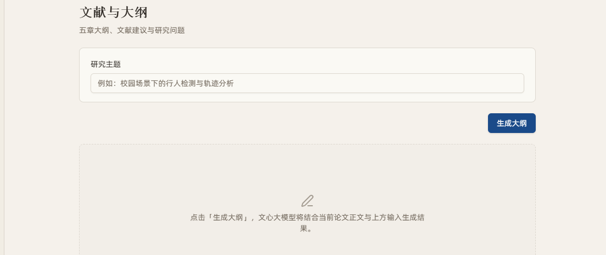
分两步调用。先点「给我出引导题」，文心根据正文出题；学生在文本框作答后再次提交，导师角色再给点评和分数。先引导，再评分，避免还没写就得到一个空的评价。
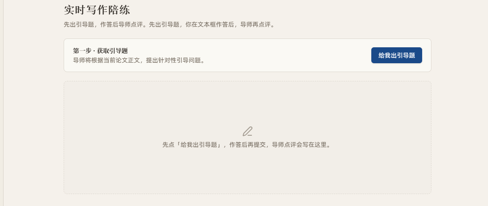
点击「开始润色分析」。从语言、逻辑、学术表达三条线诊断，给出亮点、通顺度和改写示例。润色结果用来改自己的句子，不代替学生提交的终稿。
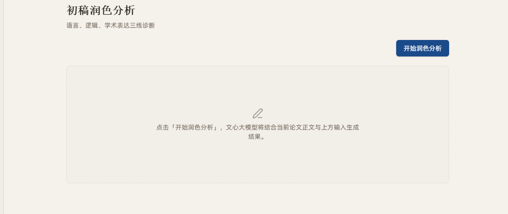
可写目标要求，例如字数或学校模板。点击「生成摘要」，输出中文摘要、英文摘要和中英文关键词。mAP 等符号保持原样，不另造正文里没有的数字。
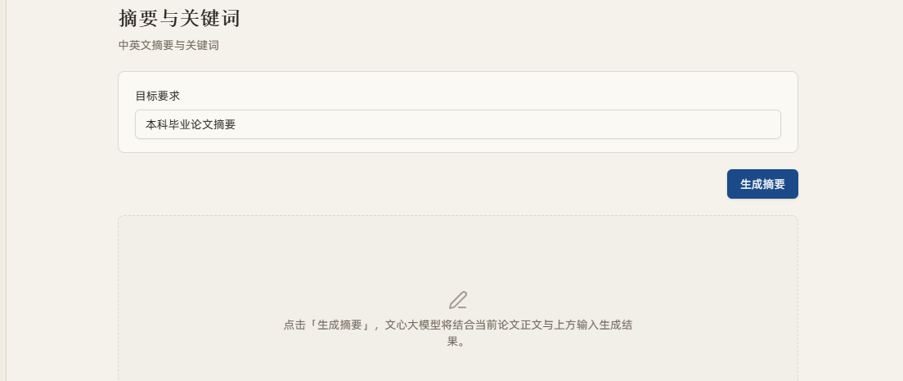
著录制式为顺序编码制。点击「整理参考文献」，按 GB/T 7714—2025 修正条目。西文姓仅首字母大写，名缩写不加下点。预印本用 PP/OL，不用 EB/OL。标准只写编号和名称。不用 2015 版写法。
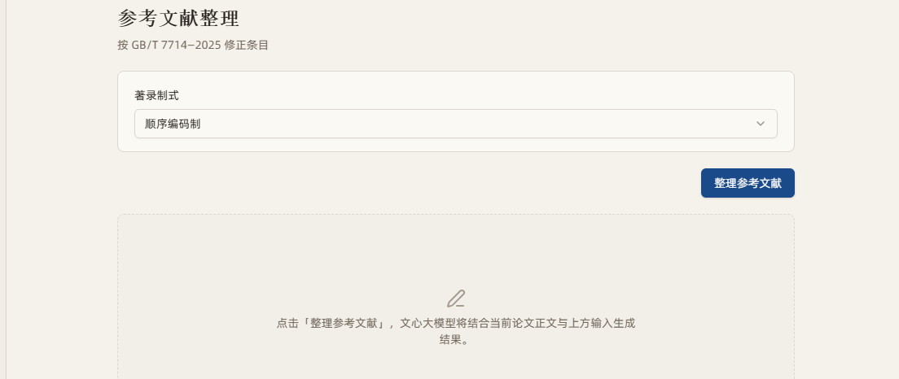
开题阶段还没有完整实验时，这一组用来收窄题目、写出开题报告、搭综述框架、排进度，并给一条能执行的科研路径。依据仍是当前正文，不另起一个无关题目。
填写拟题后点击「评估可行性」。文心给出可行性判断、研究空白、风险，以及更窄的题目写法。判断要能回到当前正文里的方法和数据，不能只说题目「有意义」。
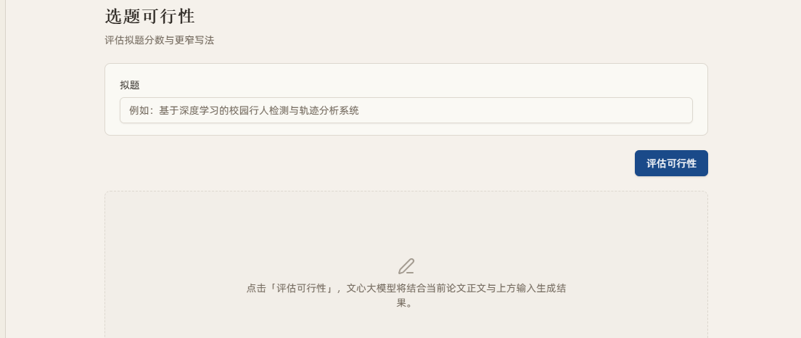
点击「生成开题报告」。按选题依据、研究内容、方案和大约十二周进度来写，口径与当前初稿一致。进度是写作安排，不是把还没做的实验写成已经完成。
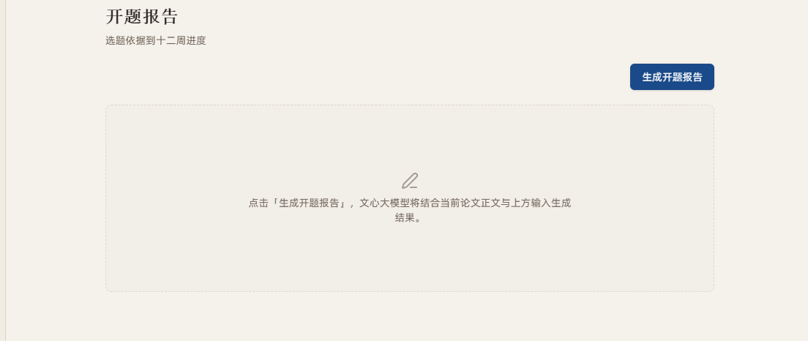
点击「生成综述框架」。按技术线组织相关工作，并写出段落之间的过渡，避免编年体流水账。示例稿里按年份堆砌的相关工作，应改成按检测、跟踪和轨迹分析来分。
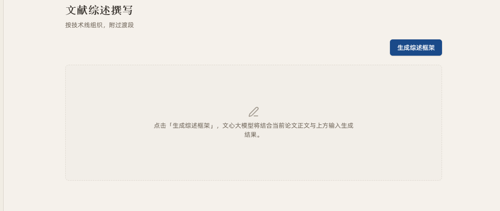
点击「生成进度任务书」。写出任务目标、里程碑和每周交付物，方便对着日历改。交付物是这一周要交的文字或实验记录，不把未测的指标提前写成结果。
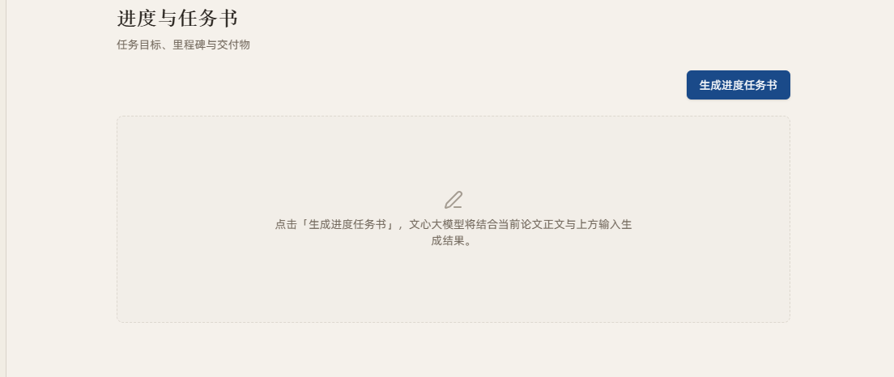
填写专业、已掌握技能和研究兴趣，点击「规划科研路径」。给出三个月内要补的短板，以及一到两年的中长期路径。路径对着这篇作业，不写成空泛的职业建议。
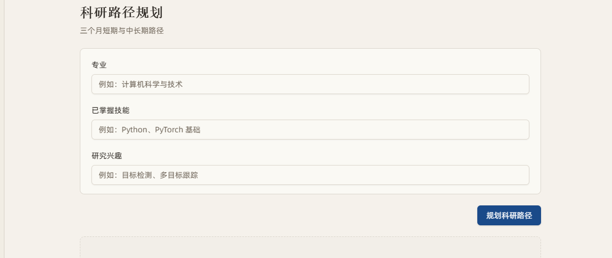
这一组处理句子和版本。降重要改结构和信息顺序，扩写要标明还缺什么，翻译要保住指标符号，对照和复盘用来看这一版比上一版到底多了哪几条。
把待改写段落放进文本框，点击「开始改写」。输出改写对照：判断写在前面，空话删掉。禁止只换同义词。当前正文仍作为语境，避免改完的句子和后文术语不一致。
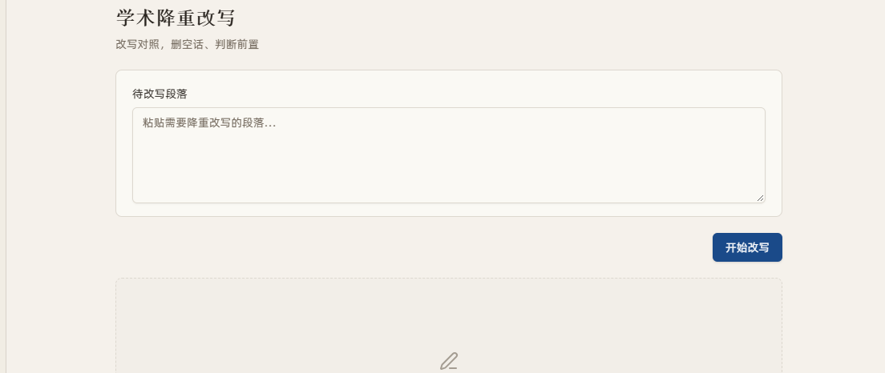
选择章节，默认从绪论开始，点击「扩写本章」。生成可粘贴的学术段落，并指出还缺的数据、对照或文献。扩写不能把 86.4% 之外的新精度写进段落。
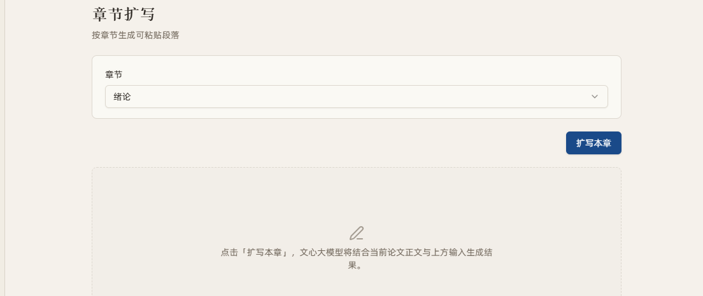
放入待翻译段落，点击「开始翻译」。中英互译，保留 mAP@0.5 这类指标符号，并提示容易译歪的术语，例如跟踪、轨迹热力和基线对比。
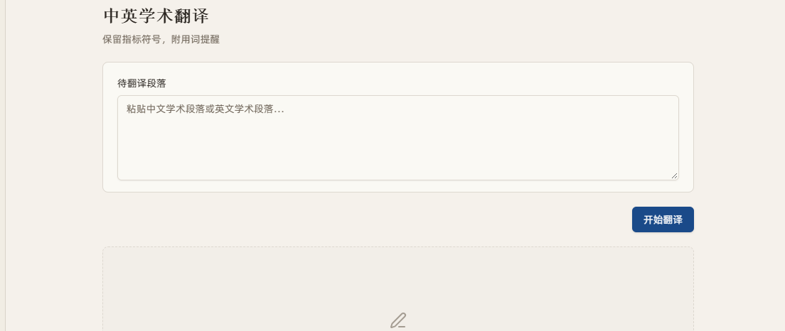
放入修改说明或第二版摘录，点击「开始对照」。相对当前正文列出进步，以及仍未改的高优先级项。用来回答「这一版到底改了没有」。
把已有的评估记录和润色记录放进同一次调用，点击「开始复盘」。总结进步、遗留问题和下一轮先改什么。还没有这两份记录时，界面提示先去评估和润色各生成一次。
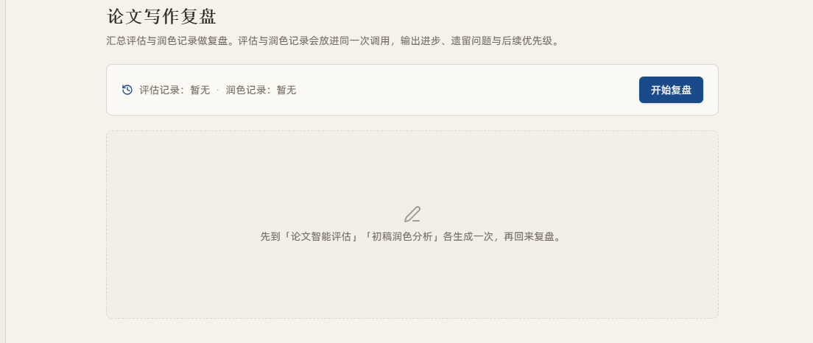
这一组管全稿的用词、图表、实验和声明。实验方案可以列出还缺的对照，但稿子里没有的速度、帧率和资源占用保持待补，不补成虚假结果。
点击「生成缩写表」。抽出全称和缩写，指出用词不统一的地方，建议全稿只用一套说法。例如检测模型、跟踪方法和评价指标，不要在各章各写一个名字。
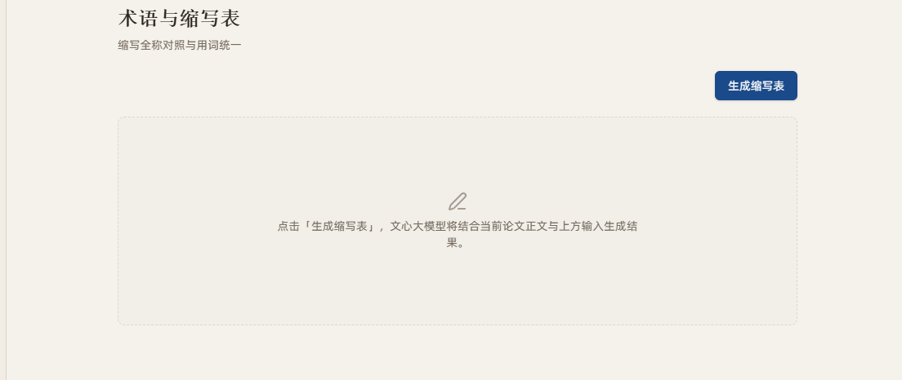
点击「生成指标定义」。按正文整理指标如何定义、彼此如何互补。正文没写的指标标成待补，不写成这篇论文已经报告的结果。mAP@0.5 的写法保持原样。
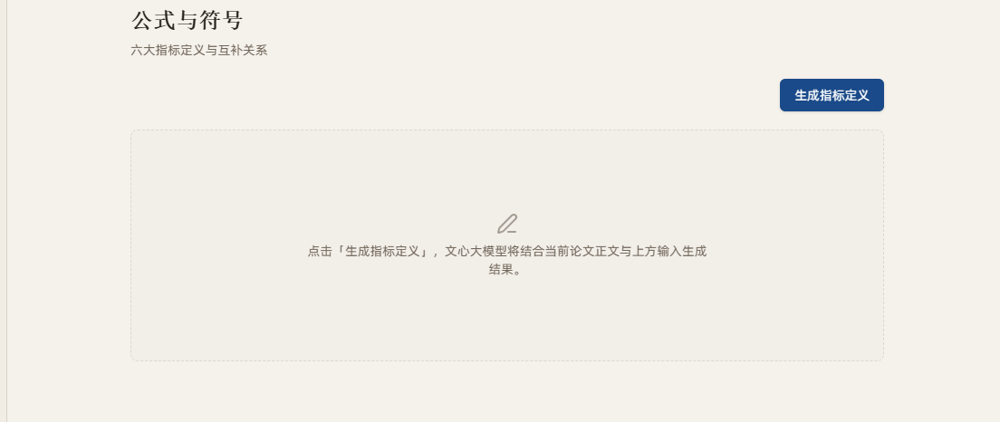
点击「生成图表规范」。给出图题、表题和图注写法，使图注离开正文仍能读懂。示例稿的检测结果图应能单独说明 8 个场景和 86.4% 指的是什么。
点击「设计实验方案」。列出对照、消融和失败案例该怎么补。示例稿只报告了 mAP@0.5 以及相对基线高 4.7 个百分点，其余条件保持待补，并写进表格骨架，而不是编一组新数。
点击「生成复现清单」。按五步写下模型、数据和指标怎么复现，哪些文件要留档。未在正文出现的超参数不当成事实，只标成复现前需要作者自己补上的项。
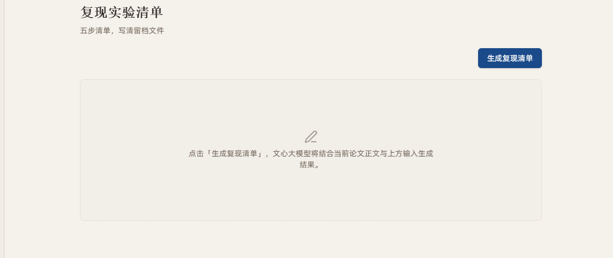
点击「生成声明草稿」。起草授权、脱敏、原创声明和致谢。校园场景若涉及行人，要提示是否说明采集范围和脱敏方式，不替作者宣称已经取得某种未写明的许可。
稿子基本成形之后，用这一组做投稿对照、模拟审稿、回复意见、准备答辩页序，以及给导师的短周报。学位要求放在刊物推荐之前。
可贴上期刊或学校的格式要求，也可以留空。点击「开始适配分析」。留空时做 GB/T 7714—2025 文献检查，并给出格式、内容侧重和结构三项清单。
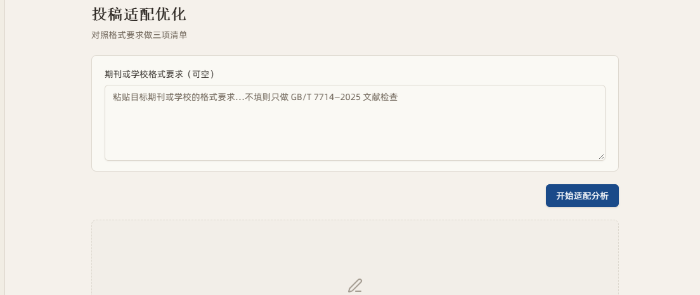
选择审稿风格，打开后默认是温和导师，一共三种。点击「开始模拟评审」，按该风格写意见、修改建议，以及返修时会追问的点。意见对着当前正文，不套用别的论文。
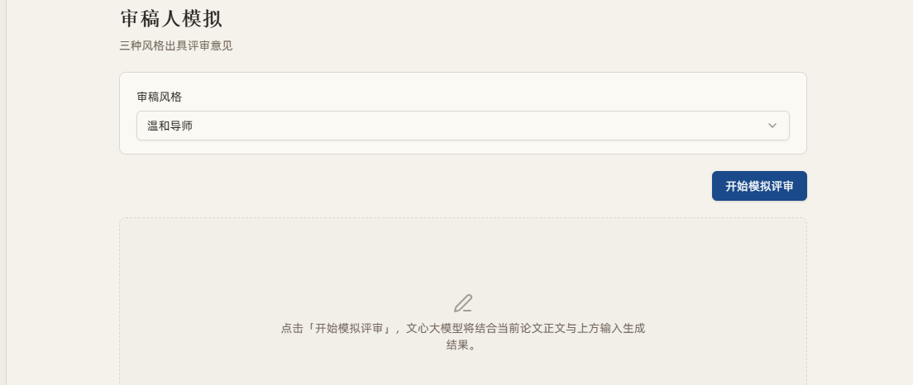
把收到的审稿意见贴进来，点击「撰写回复」。逐条回应：改了的写改在哪里，正文里没有的数据写成待补，不编成已经补做的实验。
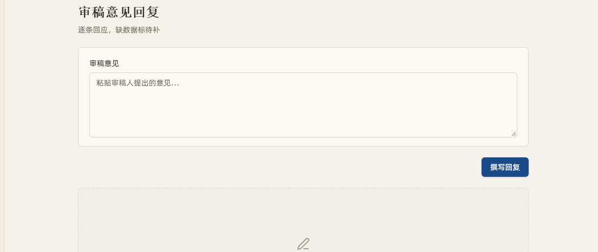
点击「生成推荐」。先看学位和学校格式是否已经满足，再给出候选刊物或会议，并说明还差哪几条。不把推荐写成已经可以投稿的结论。
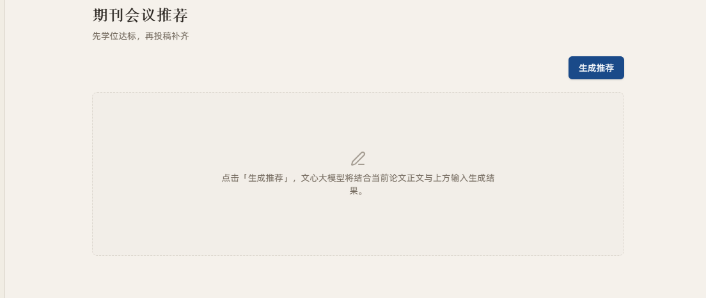
练习类别可以选择全部三类，也可以分开练。点击「出题演练」，围绕当前论文出题，并给出追问和参考回答。示例稿会被问到创新点是否说清、有没有对照、失败案例在哪里。
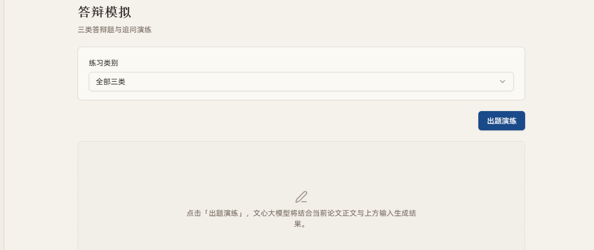
点击「生成 PPT 大纲」。给出约十二页的页序和一段开场讲稿，页序跟着当前论文的章节走。讲稿里的数字只使用正文已有的 8 个场景、12400 张图像和 86.4%。
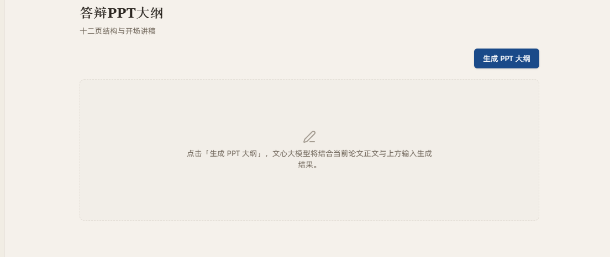
本周进展可以手写，也可以留空。点击「生成周报」，输出邮件标题和大约一百五十字的周报。内容来自当前正文和所写进展，不另编这一周没有做过的实验。
参考文献功能明确要求 GB/T 7714—2025，不用 2015 版。西文个人责任者姓仅首字母大写，名用首字母且不加下点。预印本是 PP/OL。标准写编号和标准名称。
本方案引用的场景数、图像数、mAP@0.5 和相对基线的提高，都来自示例初稿。评估给出的 65 分是这一次文心阅读的输出，不是系统内置的固定分数。
速度、资源占用、消融和失败案例，示例稿没有写。功能可以列出这些缺口，回复审稿意见时也把缺口标成待补。不能把模型的举例写进结果表。
扩写和润色给出的是可参考段落和改写对照。交上去的章节仍由学生自己确定。伦理声明只提示采集和脱敏是否需要说明，不代替作者作出许可承诺。
规范重合度若出现在评估结果中，只作为表述规范和原创性风险的提示。它不接入查重系统，不能在答辩或投稿材料里被称作重复率。
论小研适合嵌进院系已经有的写作环节，而不是再加一套与课程无关的聊天入口。开题周用选题可行性、开题报告和进度任务书；初稿周用评估、大纲和润色；定稿周用参考文献、投稿适配和答辩模拟。同一次课程共用「当前论文」这一个概念，学生换功能时不用重新交稿。
| 场合 | 老师或单位做什么 | 学生在论小研里做什么 |
|---|---|---|
| 写作工作坊 | 规定这一周只改实验或只改文献 | 上传当周稿子，跑评估和对应的那一个功能，带着建议回课堂 |
| 导师组会 | 看周报和遗留问题 | 用导师周报生成邮件标题和短文，用复盘列出还没改的项 |
| 答辩前一周 | 抽问创新点、对照和失败案例 | 用答辩模拟出题，用 PPT 大纲整理十二页页序和开场 |
使用安排面向院系或培养环节，按单位组织，不按学生每一次对话单独计价。一键全流程会连续调用四次文心，适合作为一次完整诊断，不适合无目的地反复点击。界面上只说明功能本身，不写营销口号。
全流程四次加上最后的合成报告，回答的是「这篇稿现在缺什么」。随后的修改仍回到单个功能，每次只解决一条，避免一份报告太长而没有人改。
上传新文件会替换共用正文。字数和文件名跟着变。上一篇的评估不会自动混进下一篇，复盘需要的记录由学生从对应功能带回来。
下面按一份毕业论文的八周来排，每周只强调一个缺口。学生每周上传当周的稿，顶栏字数会变，功能仍读这一份。老师在组会上对的是「待补清单」和复盘里的遗留项，而不是再听一遍题目介绍。
| 周次 | 打开的功能 | 这一周要留下的结果 |
|---|---|---|
| 第 1 周 | 上传，论文智能评估 | 整体评价、综合评分、优点和缺点。示例稿这一次是 65 分，缺点集中在实验不深和文献格式 |
| 第 2 周 | 选题可行性，开题报告 | 更窄的题目写法，以及大约十二周的进度。进度里不出现尚未测量的指标 |
| 第 3 周 | 文献综述，文献与大纲 | 按技术线重写的相关工作，五章大纲和三个研究问题。不再按年份罗列 |
| 第 4 周 | 实验设计，复现清单 | 对照、消融、失败案例和要留档的文件。速度与资源占用保持待补 |
| 第 5 周 | 章节扩写，初稿润色 | 可粘贴段落和改写对照。新段落不得写入 86.4% 以外的新精度 |
| 第 6 周 | 术语、公式、图表 | 一套缩写、指标定义和图注。mAP@0.5 的写法全稿一致 |
| 第 7 周 | 摘要与关键词，参考文献 | 中英文摘要、关键词，以及按 GB/T 7714—2025 整理的条目 |
| 第 8 周 | 投稿、审稿、答辩、周报、复盘 | 三项适配清单、模拟意见、十二页页序、百五十字周报，以及仍未改完的优先级 |
智能论文助手可以插在任意一周：说到评估、大纲、润色、摘要、投稿或答辩，会先回答再进入对应功能。一键全流程适合第 1 周想先看完整诊断的人，不适合每一周都无目的地重跑四次。
拿评估里的缺点、实验设计里的待补项，或者复盘里的遗留问题。这三样都对着当前正文，导师不用先把稿子重读一遍才能提问。
上传新版本会替换共用正文，文件名和字数一起更新。上一篇的评估不会自动混进新稿。复盘所需的记录，从评估和润色面板带回来。
示例初稿的文献问题不是「少引了某篇论文」，而是格式混用。参考文献整理固定为顺序编码制，并按 GB/T 7714—2025 改，明确不再使用 2015 版的写法。下面四类是这一功能要抓住的点。
| 稿子里常见的样子 | 这一次调用要改成 |
|---|---|
| 预印本、arXiv 稿标成 [EB/OL] | 改为 [PP/OL]。预印本不是普通网络文献 |
| 标准写成带出版社的旧格式 | 只保留标准编号和标准名称，中间用规范的连接号，不另加出版者 |
| 西文人名名在前，或缩写带下点 | 姓在前，仅首字母大写；名缩写为首字母，后面不加下点 |
| 同一篇里脚注、著者年和顺序编码混用 | 统一为顺序编码制，并给出哪些条目字段还不齐 |
投稿适配在格式要求留空时，也会做一次 GB/T 7714—2025 的文献检查，并把它放进格式、内容侧重、结构这三项清单的第一项。学生若贴了期刊或学校模板，则按该模板对照，国标检查仍作为文献条目的底线。
这一次评估已经写到文献引用格式不够规范。第 7 周不要重新讨论「要不要改格式」，直接打开参考文献整理，让文心按当前正文里的条目改一版，再由学生核对字段是否残缺。模型补不上的卷期、页码，保持待补，不编一个看起来完整的出处。
赛题要求作品在秒哒完成、能够打开，并在应用方案中写明搭建平台。论小研的平台是百度秒哒，阅读由文心完成。可运行页面如下。
| 项目 | 内容 |
|---|---|
| 产品名称 | 论小研 |
| 搭建平台 | 百度秒哒。用自然语言搭成单页网页应用，功能切换不更换地址 |
| 大模型 | 文心。使用秒哒内置模型阅读正文，作品不单独部署权重，也不在页面中放置密钥 |
| 可运行地址 | https://app-f0h51oxvcmip.miaoda.online/ |
| 作品在做什么 | 把论文评估、大纲、润色、摘要、投稿对照和答辩演练收进同一个对话，让学生围绕一篇稿子改完 |
| 本文件 | 应用方案。封面为产品首页，其后每一项功能配有该功能的界面，并写明这一次文心调用读什么、写出什么 |
打开上面的地址。看到「论文写作全流程工作台」和「上传论文」，即是本方案所描述的版本。
载入示例或上传自己的稿。顶栏出现文件名和字数后，任意功能都读这一份。
先跑一次评估。看整体评价、综合评分、优点和缺点，再决定进大纲、实验设计还是参考文献。
用对话跳到指定功能。在智能论文助手输入评估、大纲、润色、摘要、投稿或答辩，回答之后会进入对应面板并再调用一次。
示例稿的事实只保留这些：8 个校园场景，12400 张图像，YOLOv8 与 ByteTrack，mAP@0.5 = 86.4%，比基线高 4.7 个百分点，全文 3898 字。除此之外的精度、速度和资源数字，在没有写进稿子之前，一律是待补。
终稿交出去之前，用下面六问对着当前这篇稿过一遍。哪一问答不上来，就回到对应功能再调用一次文心，而不是在结果里补一组没有做过的数字。
评估的缺点里如果还写着「创新表述笼统」，回到润色或扩写，把「具有较好的检测效果」改成这篇稿真正多出来的那一步。答辩模拟会就这一点追问。
实验设计清单上的对照、消融和失败案例，有数据的写进正文，没有数据的保持待补。不要把速度、帧率、显存写成已经测过。
预印本应为 PP/OL，标准只留编号和名称，西文姓名按 GB/T 7714—2025。字段残缺就标待补，不编一个看起来完整的出处。
中英文摘要里的指标必须和正文一致：8 个场景、12400 张图像、mAP@0.5 = 86.4%、高出基线 4.7 个百分点。符号不改成口语。
两稿对照和写作复盘用来回答这句话。复盘需要先有一次评估和一次润色。没有记录时，界面会提示先去做，不会凭空总结进步。
论小研给出的是整体评价、优点、缺点和可执行建议。交上去的章节由学生自己确定。规范重合度不是查重结论，也不能写成重复率。
封面和后面的功能图，都截自已经发布的论小研。截图前先载入《计算机专业本科毕业论文初稿》，顶栏为 3898 字。每张图对应该功能打开后的样子：标题、补充栏和按钮与正文里的名称一致。评估结果单独用了一次真实输出，综合评分 65 分，优点中的场景数、图像数和 mAP 都能回到示例稿，不另作修饰。
| 在方案中的位置 | 图里能看到什么 | 和文心的关系 |
|---|---|---|
| 封面、首页 | 工作台、当前论文、上传论文、一键全流程 | 全流程在本页四次调用：评估、大纲、润色、参考文献 |
| 一次真实的评估 | 文心生成中、整体评价、65 分、优点和缺点开头 | 评审角色阅读这 3898 字之后的当次输出 |
| 基础功能 | 助手的快捷问题，以及评估、大纲、陪练、润色、摘要、参考文献的按钮 | 每个按钮一次调用，助手认到功能后会再调用一次 |
| 开题选题 | 拟题、开题报告、综述框架、进度任务书、专业与技能 | 额外栏接在共用正文后面，不替换正文 |
| 写作表达 | 待改写段落、章节、待翻译段落、第二版摘录、复盘前提示 | 复盘要先有评估记录和润色记录 |
| 规范与实验 | 缩写表、指标定义、图表规范、实验方案、复现清单、声明草稿 | 缺口写成待补，不生成稿子里没有的实验结果 |
| 答辩与投稿 | 格式要求、审稿风格、审稿意见、推荐、练习类别、PPT、周报 | 默认审稿风格是温和导师；答辩可出全部三类 |
多数功能图停在点击之前，结果区写着「文心大模型将结合当前论文正文与上方输入生成结果」。这是功能就绪的样子。真正写完的一例放在评估那一页，避免三十张图都贴上长文、正文反而看不见按钮。
研究主题的示例、拟题的示例，都指向校园场景下的行人检测与轨迹分析。换一张自己的稿，顶栏文件名和字数会变，按钮和调用方式不变。
学生不一定从左侧栏开始。更常见的是在智能论文助手里说一句人话。助手先按对话角色回答，保留最近六轮；若这句话指向某个功能，再切到该面板，用该面板的角色把同一篇正文重新读一遍。下面是六句最常用的话，对应关系与界面上的按钮一致。
| 助手里说的话 | 切到的面板 | 面板上的按钮 | 这一次写出 |
|---|---|---|---|
| 帮我评估这篇论文 | 论文智能评估 | 开始评估 | 整体评价、综合评分、四项分项、优缺点 |
| 帮我列文献和大纲 | 文献与大纲 | 生成大纲 | 五章、八条文献建议、三个研究问题 |
| 这段话帮我润色 | 初稿润色分析 | 开始润色分析 | 语言、逻辑、学术表达和改写示例 |
| 按学校要求写摘要 | 摘要与关键词 | 生成摘要 | 中英文摘要和关键词，目标要求可先填上 |
| 对照期刊格式看看 | 投稿适配优化 | 开始适配分析 | 格式、侧重、结构；要求可空 |
| 答辩可能会问什么 | 答辩模拟 | 出题演练 | 题目、追问和参考回答，类别可选全部三类 |
面板上的补充栏只属于这一次调用。研究主题、拟题、待改写段落、期刊要求、审稿意见、本周进展，都接在共用正文之后。学生下一次换功能时，这些栏不会变成新的正文。正文只在「上传论文」或「载入示例」时更换，顶栏同时更新文件名和字数。
实时写作陪练先点「给我出引导题」。学生把回答写进文本框再提交，导师角色才给点评和分数。没有作答的那一次，不会直接给出一个空的高分。
「开始全流程」依次做评估、大纲、润色、参考文献，再把优化报告写在首页下方。它适合第一周看完整诊断。后面每一周改一个缺口，用单个功能即可，不必重跑四次。
docx 取文档中的文字，pdf 逐页取文字，txt 和 md 按文本读。旧版 doc 提示另存为 docx。抽不出文字时只说明原因，不新开页面，也不清掉已经载入的正文。
顶栏可以切换深色，方便长时间对着同一篇稿修改。切换不改变正文，也不改变文心的角色。功能仍是这三十一个，调用方式不变。
三十一个功能不是三十种聊天。分组的意义是：学生知道这一周该守哪一条，文心也只按这一条的角色回答。换组不换稿。
| 分组 | 这一组守住的事 | 不要让它做的事 |
|---|---|---|
| 基础功能 | 听懂问题，给出评分、大纲、陪练、润色、摘要和文献格式 | 不把六轮对话里的闲聊写进论文正文 |
| 开题选题 | 收窄题目，写出开题、综述框架、进度和三个月路径 | 不另起一个和当前实验无关的题目 |
| 写作表达 | 改句子、扩章节、翻译、对照两稿、复盘遗留问题 | 不用同义词替换冒充降重，不编新的实验数字 |
| 规范与实验 | 统一术语和指标，列出对照、消融、复现和声明 | 不把待补的速度、帧率、显存写成已经测过 |
| 答辩与投稿 | 对照格式、模拟审稿、回复意见、出答辩题、写周报 | 不把刊物推荐写在学位要求之前 |
第 1 周的 65 分和缺点清单决定后面先动实验还是先动文献。没有这一次阅读，后面的功能仍能用，但学生不知道该先改哪一条。
大纲、润色、文献、答辩不要在同一小时里各跑一遍却都不改稿。改完再上传新版本，让下一次评估读到新的正文。
复盘不会自动保存每一次点击。评估和润色的文字，由学生放回复盘的两个记录栏。没有记录时，界面会提示先去做。
作品在百度秒哒发布。打开 https://app-f0h51oxvcmip.miaoda.online/ 即可看到本方案里的工作台。文心负责阅读，页面不放置密钥，也不单独部署模型权重。
用这一个地址即可走完本方案：载入示例或上传自己的 docx、pdf、txt、md，先看评估里的整体评价和缺点，再按八周的顺序进入大纲、实验、润色、文献和答辩。每一次点击都是文心阅读当前正文；稿子里没有的数字保持待补。交上去的终稿，仍由学生自己确定。